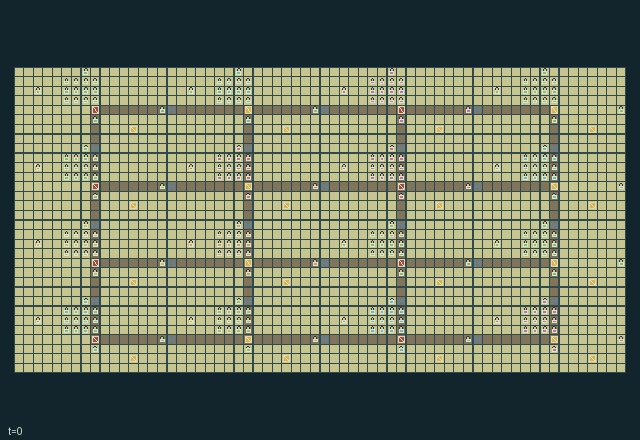

GI238 · Railway Commons Republics

Maintain freight routes, feed towns and contest physical passage through shared station actions while preserving bridges and carriers.
Identity and original contract
256 independently actionable roles; 19 discrete commands per role; 231 native observation columns per role; original horizon 1024 steps. Declared per-step reward range: -4.0 to 4.0. Observation regime: partially_observable.
Source SHA-256: c491d2ff054fbe8ac13430c940bb2c1e84719e3d6fe2d8d7cbb2fe5d69cbb491
The objective, rewards, population, map and horizon remain original. A preview is not a success claim.
Objective and gameplay
Maintain freight routes, feed towns and contest physical passage through shared station actions while preserving bridges and carriers.
Building changes others routes; switches commit choices; destination passage controls eligibility; power depletes; braking and edge reservations cause queues; cargo affects origin and recipient.
- Sixteen republics each control sixteen people. Towns share 24 rail links and eight autonomous four-unit trains; trains are not agent rows.
- Ore builds track and repairs bridges. Horizontal links start unfinished; vertical links are open alternatives. Walking crews must reach actual work sites.
- A switch chooses a cardinal link and commits for six ticks. Departures spend power. Red signals brake approaching trains over real remaining distance.
- Passage is public or home-origin only. Visitors at the station may declare it public; home actors may reclaim it. Physical presence matters.
- Trains need clear links, valid destination passage, bridges and power. Load/unload at parked trains; foreign cargo replenishes physical town stock.
- Weather damages bridges every 32 ticks. Crews can repair carriers; pantry grain is consumed every sixteen ticks. Accounting ends at 1024.
Ending: No early natural terminal; a fixed 1024-tick settlement season truncates.
What this game explores
Resource commons & externalities: An action changes a persistent resource or burden that another role also encounters. Compare extraction with maintenance and record the downstream resource trajectory.
Commitment, exchange & governance: Promises consume time, liquidity, access or material. Separate an announced agreement from a binding commitment and from its eventual delivery; log cancellation and expiry too.
Complementary production & service: A useful outcome requires ordered stages, scarce equipment or another role's capability. Measure real completed products and resource circulation rather than counting intermediate actions as success.
Joint transport & shared access: Positions, load geometry, occupancy and persistent access constrain whose action can succeed next. Distinguish physical handoff, shared controls and simultaneous force from a cosmetic cooperation label.
These are questions supported by rule structure, not observed learning effects.
Play it: operating walkthrough
crucibles play --game gi238Keep Python running and open its printed address. Select this game, set a seed and press Create session. The game itself is always English.
Assign a role range to Host with Assign / take over, or Assign all roles. Invite a second participant with Create player invitation, then assign a disjoint subset. Every original role is available.
For every owned role choose a legal command and press Queue. Arrow keys / WASD queue a declared directional action for the current role camera when available. Space or Advance one joint step advances everyone together. Non-directional games use the selectors.
Unqueued roles use the labelled untrained uniform-legal policy. Take over or release roles before the next step without resetting. Full-state debug is privileged and permanently logged; role cameras preserve permissions. Close the session to retain logs. Server restart does not restore sessions.
Complete command reference
IDs and English labels exactly match the manifest. Availability depends on role, resources, location and phase. An available action can still have no productive effect.
0·Wait / receive
1·Walk north
2·Walk east
3·Walk south
4·Walk west
5·Gather ore at mine or grain at farm with matching tool
6·Spend ore on nearby track and bridge
7·Rotate station switch east/south/west/north with signal tool
8·Toggle station red signal with signal tool
9·Load matching cargo into adjacent parked train
10·Unload foreign cargo at staffed station
11·Declare local passage public
12·Claim home-town passage for home freight
13·Fuel local power substation with ore
14·Hand cargo to adjacent waiting empty actor
15·Exchange tools with adjacent waiting actor
16·Relay station route and signal locally
17·Stock station pantry with grain
18·Repair adjacent train with ore and repair tool
Roles and capability identifiers
These original role names describe capabilities, not interchangeable skins. Check each owned role's legal selector before planning handoffs.
agent_0·miner
agent_1·tracklayer
agent_2·signal worker
agent_3·courier
agent_4·farmer
agent_5·repairer
agent_6·miner
agent_7·tracklayer
agent_8·signal worker
agent_9·courier
agent_10·farmer
agent_11·repairer
agent_12·miner
agent_13·tracklayer
agent_14·signal worker
agent_15·courier
agent_16·miner
agent_17·tracklayer
agent_18·signal worker
agent_19·courier
agent_20·farmer
agent_21·repairer
agent_22·miner
agent_23·tracklayer
agent_24·signal worker
agent_25·courier
agent_26·farmer
agent_27·repairer
agent_28·miner
agent_29·tracklayer
agent_30·signal worker
agent_31·courier
agent_32·miner
agent_33·tracklayer
agent_34·signal worker
agent_35·courier
agent_36·farmer
agent_37·repairer
agent_38·miner
agent_39·tracklayer
agent_40·signal worker
agent_41·courier
agent_42·farmer
agent_43·repairer
agent_44·miner
agent_45·tracklayer
agent_46·signal worker
agent_47·courier
agent_48·miner
agent_49·tracklayer
agent_50·signal worker
agent_51·courier
agent_52·farmer
agent_53·repairer
agent_54·miner
agent_55·tracklayer
agent_56·signal worker
agent_57·courier
agent_58·farmer
agent_59·repairer
agent_60·miner
agent_61·tracklayer
agent_62·signal worker
agent_63·courier
agent_64·miner
agent_65·tracklayer
agent_66·signal worker
agent_67·courier
agent_68·farmer
agent_69·repairer
agent_70·miner
agent_71·tracklayer
agent_72·signal worker
agent_73·courier
agent_74·farmer
agent_75·repairer
agent_76·miner
agent_77·tracklayer
agent_78·signal worker
agent_79·courier
agent_80·miner
agent_81·tracklayer
agent_82·signal worker
agent_83·courier
agent_84·farmer
agent_85·repairer
agent_86·miner
agent_87·tracklayer
agent_88·signal worker
agent_89·courier
agent_90·farmer
agent_91·repairer
agent_92·miner
agent_93·tracklayer
agent_94·signal worker
agent_95·courier
agent_96·miner
agent_97·tracklayer
agent_98·signal worker
agent_99·courier
agent_100·farmer
agent_101·repairer
agent_102·miner
agent_103·tracklayer
agent_104·signal worker
agent_105·courier
agent_106·farmer
agent_107·repairer
agent_108·miner
agent_109·tracklayer
agent_110·signal worker
agent_111·courier
agent_112·miner
agent_113·tracklayer
agent_114·signal worker
agent_115·courier
agent_116·farmer
agent_117·repairer
agent_118·miner
agent_119·tracklayer
agent_120·signal worker
agent_121·courier
agent_122·farmer
agent_123·repairer
agent_124·miner
agent_125·tracklayer
agent_126·signal worker
agent_127·courier
agent_128·miner
agent_129·tracklayer
agent_130·signal worker
agent_131·courier
agent_132·farmer
agent_133·repairer
agent_134·miner
agent_135·tracklayer
agent_136·signal worker
agent_137·courier
agent_138·farmer
agent_139·repairer
agent_140·miner
agent_141·tracklayer
agent_142·signal worker
agent_143·courier
agent_144·miner
agent_145·tracklayer
agent_146·signal worker
agent_147·courier
agent_148·farmer
agent_149·repairer
agent_150·miner
agent_151·tracklayer
agent_152·signal worker
agent_153·courier
agent_154·farmer
agent_155·repairer
agent_156·miner
agent_157·tracklayer
agent_158·signal worker
agent_159·courier
agent_160·miner
agent_161·tracklayer
agent_162·signal worker
agent_163·courier
agent_164·farmer
agent_165·repairer
agent_166·miner
agent_167·tracklayer
agent_168·signal worker
agent_169·courier
agent_170·farmer
agent_171·repairer
agent_172·miner
agent_173·tracklayer
agent_174·signal worker
agent_175·courier
agent_176·miner
agent_177·tracklayer
agent_178·signal worker
agent_179·courier
agent_180·farmer
agent_181·repairer
agent_182·miner
agent_183·tracklayer
agent_184·signal worker
agent_185·courier
agent_186·farmer
agent_187·repairer
agent_188·miner
agent_189·tracklayer
agent_190·signal worker
agent_191·courier
agent_192·miner
agent_193·tracklayer
agent_194·signal worker
agent_195·courier
agent_196·farmer
agent_197·repairer
agent_198·miner
agent_199·tracklayer
agent_200·signal worker
agent_201·courier
agent_202·farmer
agent_203·repairer
agent_204·miner
agent_205·tracklayer
agent_206·signal worker
agent_207·courier
agent_208·miner
agent_209·tracklayer
agent_210·signal worker
agent_211·courier
agent_212·farmer
agent_213·repairer
agent_214·miner
agent_215·tracklayer
agent_216·signal worker
agent_217·courier
agent_218·farmer
agent_219·repairer
agent_220·miner
agent_221·tracklayer
agent_222·signal worker
agent_223·courier
agent_224·miner
agent_225·tracklayer
agent_226·signal worker
agent_227·courier
agent_228·farmer
agent_229·repairer
agent_230·miner
agent_231·tracklayer
agent_232·signal worker
agent_233·courier
agent_234·farmer
agent_235·repairer
agent_236·miner
agent_237·tracklayer
agent_238·signal worker
agent_239·courier
agent_240·miner
agent_241·tracklayer
agent_242·signal worker
agent_243·courier
agent_244·farmer
agent_245·repairer
agent_246·miner
agent_247·tracklayer
agent_248·signal worker
agent_249·courier
agent_250·farmer
agent_251·repairer
agent_252·miner
agent_253·tracklayer
agent_254·signal worker
agent_255·courier
Information and observation permissions
Surveyed corridor geometry is public. Only selected nearest site/link/train/agent rows reveal operational state. Home identity grants no remote treasury or signal view. Explicit decaying local bulletins convey route information. Off-view events are debug-only.
The GIF is full-state debug and may reveal hidden entities or private state. Train on obs[agent], not the picture, state tree or another role's private row. Field slices and visibility are in the original manifest.
Reinforcement-learning integration
import jax
from crucibles_jaxmarl import make
env = make("gi238")
key = jax.random.PRNGKey(0)
key, rk, ak, sk = jax.random.split(key, 4)
obs, state = jax.jit(env.reset)(rk)
actions = env.sample_actions(ak, state)
obs, state, rewards, dones, info = jax.jit(env.step_env)(sk, state, actions)
done = dones["__all__"]Observations are float32 vectors of width 231; actions are scalar int32; masks have 19 entries. Supply all 256 roles each transition. Masked sampling is an engineering reference, not a trained learner.
step_env retains terminal data without reset. step performs outer autoreset and keeps terminal data in info["raw_state"] and info["raw_observation"]. Use dones["__all__"] for episode boundaries; separate completion, failure and time limit in analysis.
JIT or vmap equal identities and shapes. Split independent reset, policy and transition keys. Group different shapes explicitly; do not shrink the population or horizon. Host rendering stays outside training.
Training questions and fair evaluation
Define valid completion from the objective before fitting. Preserve original rewards and also report real deliveries/services, losses, resource state, unresolved episodes and per-role returns. Animation is not a reward signal.
An action changes a persistent resource or burden that another role also encounters. Compare extraction with maintenance and record the downstream resource trajectory.
Promises consume time, liquidity, access or material. Separate an announced agreement from a binding commitment and from its eventual delivery; log cancellation and expiry too.
A useful outcome requires ordered stages, scarce equipment or another role's capability. Measure real completed products and resource circulation rather than counting intermediate actions as success.
Positions, load geometry, occupancy and persistent access constrain whose action can succeed next. Distinguish physical handoff, shared controls and simultaneous force from a cosmetic cooperation label.
Compare memory, communication or centralized critics under matched actor information. Declare critic access; keep actor inputs role-filtered. Match partner/opponent distributions, masks, compute and checkpoint selection. Final tests never enter fitting or selection.
Independent training runs or source-pairing blocks are inferential units; episodes from one policy are not independent training replications. Save hashes, keys, versions, device, time and cost. Negative, zero, failed and indeterminate outcomes are valid. No trained checkpoint or target score is supplied.
Classification and evidence
Overlapping editorial labels are reading aids, not proof of novelty, difficulty, strategic equivalence or learning effects.
- Resource commons & externalities
- Evidence
manifest.task.objective: Maintain freight routes, feed towns and contest physical passage through shared station actions while preserving bridges and carriers.
- Commitment, exchange & governance
- Evidence
manifest.task.interaction: Building changes others routes; switches commit choices; destination passage controls eligibility; power depletes; braking and edge reservations cause queues; cargo affects origin and recipient.
- Evidence
scene.rules.2: A switch chooses a cardinal link and commits for six ticks. Departures spend power. Red signals brake approaching trains over real remaining distance.
- Complementary production & service
- Evidence
manifest.actions.18: Repair adjacent train with ore and repair tool
- Evidence
scene.rules.1: Ore builds track and repairs bridges. Horizontal links start unfinished; vertical links are open alternatives. Walking crews must reach actual work sites.
- Evidence
scene.rules.5: Weather damages bridges every 32 ticks. Crews can repair carriers; pantry grain is consumed every sixteen ticks. Accounting ends at 1024.
- Joint transport & shared access
- Evidence
manifest.task.objective: Maintain freight routes, feed towns and contest physical passage through shared station actions while preserving bridges and carriers.
- Evidence
manifest.task.interaction: Building changes others routes; switches commit choices; destination passage controls eligibility; power depletes; braking and edge reservations cause queues; cargo affects origin and recipient.
- Evidence
manifest.task.observation_access: Surveyed corridor geometry is public. Only selected nearest site/link/train/agent rows reveal operational state. Home identity grants no remote treasury or signal view. Explicit decaying local bulletins convey route information. Off-view events are debug-only.
Source, receipts and preview limits
The world-only English GIF replays saved untrained legal actions through the original kernel. At most 25 actual endpoints include initial and terminal state; no invented interpolation. It is full-state debug, not the role observation.
Original source, observation slices, manifest and mechanism
Native receipt · Presentation receipt
Engineering passes do not establish learning. Nonzero floating differences remain recorded and undetermined; no new tolerance was introduced. Human scores remain unverified.